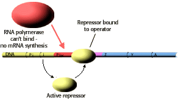
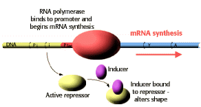

Molecular Genetics of Prokaryotes Problem Set
Problem 2: The role of the inducer of the lac operon.
Tutorial to help answer the questionThe inducer:
A. combines with a repressor and prevents it from binding to the promoter B. combines with a repressor and prevents it from binding to the operator C. binds to the promoter and prevents the repressor from binding to the operator D. binds to the operator and prevents the repressor from binding at this site E. binds to the termination codons and allows protein synthesis to continue
Tutorial
The inducer
| The inducer is a small molecule that is a signal within the cell that lactose is available for metabolism. The natural inducer is allolactose, an isomer of lactose. |
In the absence of the inducer
|  |
| In the absence of the inducer, the repressor protein binds to the lac operon DNA and prevents synthesis of the mRNA for the lac operon. Since lactose is not available for metabolism, the cell has no need to express enzymes required for the metabolism of lactose. |
In the presence of the inducer
|  |
|
In the presence of the inducer, the inducer binds to the repressor protein "inducing" a conformational change in the structure of the repressor protein. The repressor protein-inducer complex does not bind to the lac operator DNA. mRNA synthesis from the lac operon can occur when inducer is present.
This regulatory circuit allows E. coli to turn off expression of genes for lactose metabolism when lactose is unavailable, and turn on these genes when lactose is present. |


University of Arizona
Thursday, October 17, 1996
Contact the Development Team
http://www.biology.arizona.edu
All contents copyright © 1998-99. All rights reserved.